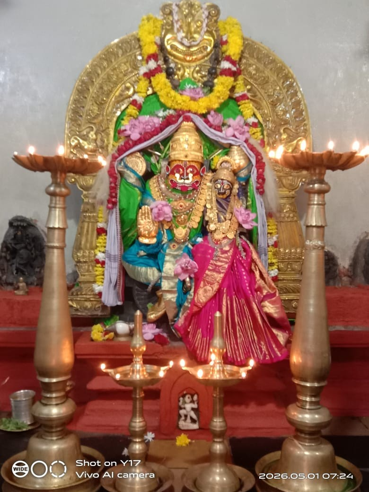
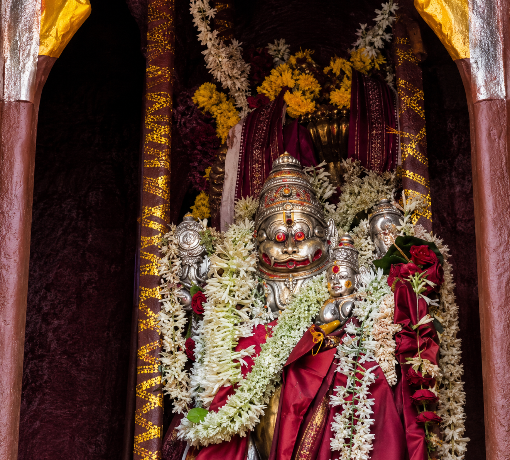
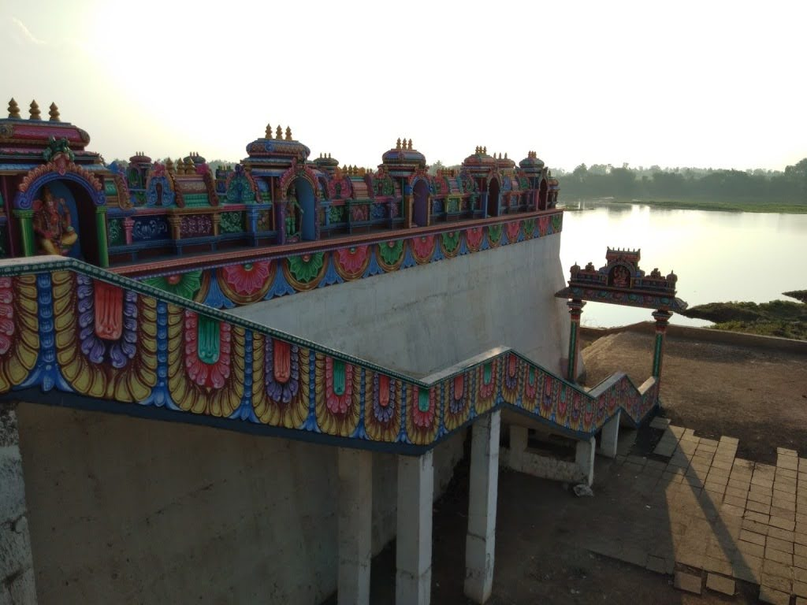

Shurpali, traditionally known as Shurpalaya, is a historic and sacred village located in Jamkhandi Taluk of Bagalkot District, Karnataka. Situated on the holy banks of the Krishna River, the village is renowned for the ancient Sri Lakshmi Narasimha Swamy Temple and is revered as Dakshina Kashi (Southern Kashi).
For centuries, devotees from Karnataka, Maharashtra, and other regions have visited this sacred kshetra seeking the blessings of Lord Lakshmi Narasimha. The village continues to preserve its rich spiritual heritage, traditions, and devotional culture.
Shurpali has long been regarded as an ancient pilgrimage centre on the banks of the Krishna River. Traditional accounts associate the kshetra with references found in the Skanda Purana and with the worship of Lord Lakshmi Narasimha.
While the exact date of construction of the temple is not known, the temple is widely recognised as an ancient sacred kshetra with a long history of devotion, pilgrimage, and religious importance.
The origin of the name Shurpali is connected with ancient traditions and sacred legends that have been passed down through generations. Traditionally, the village was known as Shurpalaya.
One legend tells of a devotee who regularly performed Annadana (food donation). When he ran out of grain, he prayed to Lord Lakshmi Narasimha. Through the blessings of Goddess Lakshmi, he received a Shurpa (a traditional grain-winnowing basket) filled with grain. It is believed that the place later became known as Shurpali because of this divine blessing.
Another tradition states that Mother Bhageerathi (Ganga) performed Shurpa Dana at this sacred kshetra. Because of this holy act, the place became known as Shurpalaya, which gradually evolved into the modern name, Shurpali.
The Sri Lakshmi Narasimha Swamy Temple is the spiritual heart of Shurpali. Dedicated to Lord Lakshmi Narasimha, the temple has been a centre of devotion and pilgrimage for centuries.
Devotees from Karnataka, Maharashtra, and other parts of India visit the temple throughout the year to seek blessings and participate in religious celebrations.
Although the exact date of construction of the temple is not known, it is widely regarded as an ancient sacred kshetra and holds immense spiritual significance among devotees.

Shurpali is often referred to as “Dakshina Kashi” (Southern Kashi) because of its sacred location on the banks of the Krishna River and its long-standing spiritual importance.
The village has been a centre of pilgrimage and devotion for centuries. Traditional accounts speak of sacred theerthas in the region and the presence of several important temples, making Shurpali a revered destination for devotees.
Just as Kashi is one of the most sacred pilgrimage centres in North India, Shurpali is regarded by many devotees as a spiritually significant kshetra in South India.
One of the unique features of the temple is the sacred Ashwattha (Peepal) tree situated near the temple premises.
According to local tradition, Lord Parashurama was deeply moved by the beauty and sanctity of Shurpalaya. His tears of joy are believed to have given rise to this sacred tree.
The Ashwattha tree continues to be revered by devotees and forms an important part of the spiritual heritage of the kshetra.
Shurpali has long been associated with spiritual learning, devotion, and the Madhwa tradition. The kshetra is revered as the Tapobhumi of Shri Yadavaryaru, whose devotion and spiritual practices are remembered by devotees.
The temple also has connections with revered saints and pontiffs who have visited and enriched the spiritual heritage of the region over the centuries.
The traditions of worship, devotion, and service continue to be preserved by devotees and temple authorities, making Shurpali an important centre of faith.
The sacred month of Karthika holds special significance at Shurpali. During this auspicious period, devotees gather at the Sri Lakshmi Narasimha Swamy Temple to participate in special poojas, bhajans, and devotional activities.
The temple is beautifully illuminated with traditional oil lamps during Deepotsava, creating a divine atmosphere along the banks of the Krishna River.
Tulasi Pooja, devotional singing, and spiritual discourses form an important part of the Karthika celebrations, attracting devotees from nearby villages and towns.
Narasimha Jayanti is one of the most important festivals celebrated at Shurpali. Devotees gather in large numbers to offer prayers and seek the blessings of Lord Lakshmi Narasimha.
The annual Jathri is a major event in the village and attracts pilgrims from Karnataka, Maharashtra, and other regions. The celebrations include religious ceremonies, cultural traditions, and community participation.
These festivals preserve the rich heritage of the kshetra and strengthen the bond between devotees and the temple.

Today, Shurpali remains a peaceful village that beautifully combines tradition, devotion, and natural beauty.
The sacred Krishna River, the ancient Sri Lakshmi Narasimha Swamy Temple, and the warm hospitality of the local people continue to attract visitors throughout the year.
As a centre of faith and cultural heritage, Shurpali stands as a symbol of spiritual devotion and timeless tradition.
